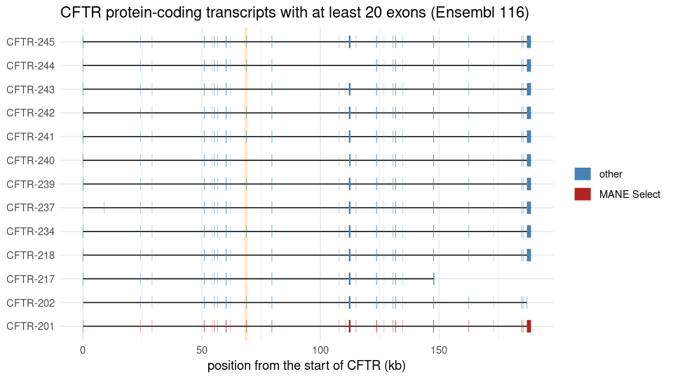
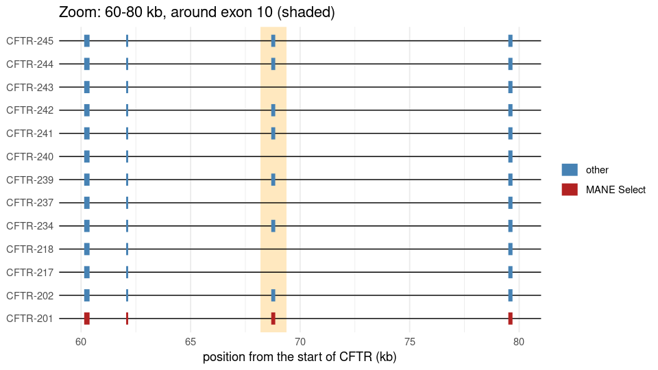

Exercise in R: Gene expression (recap)
Goal
By the end of this exercise you should be able to:
- summarise a database table by groups with
group_by()andsummarise(): here, exon and transcript lengths for every transcript of a gene; - compare the exons of two transcripts to find a skipped exon;
- draw transcripts as an exon diagram with
geom_segment().
Before you start
This page builds on F1–F3 of the Exercise. You need the packages readr, dplyr and ggplot2. Download cftr_exons_ensembl116.csv and save it in a data/ folder of your R project.
The file has one row per exon for all 45 CFTR transcripts in Ensembl release 116 (GRCh38), downloaded from the Ensembl REST API on 2026-11-20; data/README.md gives the exact query. Coordinates are on chromosome 7 and include both ends, so an exon from start to end is end - start + 1 nt long. CFTR is on the + strand, so exon_rank 1 is the leftmost exon.
Tasks
New idiom: grouped summaries. group_by() splits a table into groups (here: one group per transcript), and summarise() then computes one row per group: n() counts rows, sum(), min() and max() work on a column within each group. .groups = "drop" removes the grouping afterwards. You have seen grouped summaries before; here they turn a long exon table into a transcript table.
library(readr)
library(dplyr)
library(ggplot2)R1. (look at the table) Read the file. How many rows are there? Count the transcripts of each biotype: use distinct() first, so that each transcript counts once rather than once per exon.
exons <- read_csv("data/cftr_exons_ensembl116.csv")
exons
exons |> distinct(transcript_name, biotype) |> count(biotype, sort = TRUE)R2. (exon lengths) Add an exon_length column. Keep only the MANE Select transcript, and find its number of exons, its shortest and longest exon, and the total length. Then list the internal exons (not the first or last) whose length is a multiple of 3, using the remainder operator %%. Skipping any of these keeps the reading frame (exercise B3).
exons <- exons |> mutate(exon_length = end - start + 1)
mane <- exons |> filter(mane_select)
mane |> select(exon_rank, start, end, exon_length) |> print(n = 27)
mane |> summarise(n_exons = n(), shortest = min(exon_length), longest = max(exon_length),
total = sum(exon_length))
mane |> filter(exon_rank > 1, exon_rank < 27, exon_length %% 3 == 0) |>
select(exon_rank, exon_length)R3. (transcript lengths) Summarise every transcript: number of exons, transcript length (sum of exon lengths) and genomic span (first start to last end). What fraction of the span of the MANE transcript ends up in the mRNA? Then list the protein-coding transcripts by protein length, and compare biotypes.
tx <- exons |>
group_by(transcript_name, biotype, mane_select, protein_length) |>
summarise(n_exons = n(),
tx_length = sum(exon_length),
span = max(end) - min(start) + 1,
.groups = "drop") |>
mutate(exon_fraction = tx_length / span)
tx |> filter(mane_select) |> select(transcript_name, n_exons, tx_length, span, exon_fraction)
tx |> filter(biotype == "protein_coding") |>
arrange(desc(protein_length)) |>
select(transcript_name, protein_length, n_exons, tx_length) |>
print(n = 21)
tx |> group_by(biotype) |> summarise(transcripts = n(), median_exons = median(n_exons))R4. (which exon is skipped?) UniProt isoform 2 has 1419 amino acids. In R3, find the Ensembl transcript with that protein length, and compare its exons with the MANE exons using %in%. First compare on start, then on end. Why do the two comparisons give different answers? How many nucleotides do 1480 − 1419 amino acids correspond to?
cftr218 <- exons |> filter(transcript_name == "CFTR-218")
mane |> filter(!(start %in% cftr218$start)) |> select(exon_rank, start, end, exon_length)
mane |> filter(!(end %in% cftr218$end)) |> select(exon_rank, start, end, exon_length)
cftr218 |> filter(exon_rank == 1) |> select(exon_rank, start, end)
(1480 - 1419) * 3R5. (an exon diagram) Draw the protein-coding transcripts with at least 20 exons, one per row, as geom_segment(): a thin line from the first to the last base of each transcript (the introns), and a thick segment for each exon. Shade exon 10 with annotate(). Positions are in kb from the start of the leftmost transcript. Then zoom in on 60–80 kb with coord_cartesian(). Which transcripts lack exon 10?
keep <- tx |> filter(biotype == "protein_coding", n_exons >= 20) |> pull(transcript_name)
keep
plot_ex <- exons |> filter(transcript_name %in% keep)
gene_start <- min(plot_ex$start)
plot_ex <- plot_ex |> mutate(start_kb = (start - gene_start) / 1000, end_kb = (end - gene_start) / 1000)
introns <- plot_ex |> group_by(transcript_name, mane_select) |>
summarise(from = min(start_kb), to = max(end_kb), .groups = "drop")
exon10 <- mane |> filter(exon_rank == 10) |>
mutate(start_kb = (start - gene_start) / 1000, end_kb = (end - gene_start) / 1000)
p <- ggplot(plot_ex, aes(y = transcript_name)) +
annotate("rect", xmin = exon10$start_kb - 0.5, xmax = exon10$end_kb + 0.5, ymin = -Inf, ymax = Inf,
fill = "orange", alpha = 0.25) +
geom_segment(data = introns, aes(x = from, xend = to, yend = transcript_name), linewidth = 0.4) +
geom_segment(aes(x = start_kb, xend = end_kb, yend = transcript_name, colour = mane_select),
linewidth = 5) +
scale_colour_manual(values = c(`TRUE` = "firebrick", `FALSE` = "steelblue"),
labels = c(`TRUE` = "MANE Select", `FALSE` = "other")) +
labs(x = "position from the start of CFTR (kb)", y = NULL, colour = NULL,
title = "CFTR protein-coding transcripts with at least 20 exons (Ensembl 116)") +
theme_minimal()
p
p + coord_cartesian(xlim = c(60, 80)) + labs(title = "Zoom: 60-80 kb, around exon 10 (shaded)")Solutions
All output below is from Rscript --vanilla run in the unit folder (messages from loading packages left out).
R1.
Rows: 728 Columns: 9
── Column specification ────────────────────────────────────────────────────────
Delimiter: ","
chr (4): transcript_id, transcript_name, biotype, exon_id
dbl (4): protein_length, exon_rank, start, end
lgl (1): mane_select
ℹ Use `spec()` to retrieve the full column specification for this data.
ℹ Specify the column types or set `show_col_types = FALSE` to quiet this message.
# A tibble: 728 × 9
transcript_id transcript_name biotype mane_select protein_length exon_rank
<chr> <chr> <chr> <lgl> <dbl> <dbl>
1 ENST00000003084… CFTR-201 protei… TRUE 1480 1
2 ENST00000003084… CFTR-201 protei… TRUE 1480 2
3 ENST00000003084… CFTR-201 protei… TRUE 1480 3
4 ENST00000003084… CFTR-201 protei… TRUE 1480 4
5 ENST00000003084… CFTR-201 protei… TRUE 1480 5
6 ENST00000003084… CFTR-201 protei… TRUE 1480 6
7 ENST00000003084… CFTR-201 protei… TRUE 1480 7
8 ENST00000003084… CFTR-201 protei… TRUE 1480 8
9 ENST00000003084… CFTR-201 protei… TRUE 1480 9
10 ENST00000003084… CFTR-201 protei… TRUE 1480 10
# ℹ 718 more rows
# ℹ 3 more variables: exon_id <chr>, start <dbl>, end <dbl>
# A tibble: 4 × 2
biotype n
<chr> <int>
1 protein_coding 21
2 nonsense_mediated_decay 11
3 protein_coding_CDS_not_defined 11
4 retained_intron 2728 exons in 45 transcripts: 21 protein-coding, 11 with a premature stop (nonsense_mediated_decay), 11 with no defined coding sequence (often fragments), and 2 that keep an intron. read_csv() reads mane_select as logical (TRUE/FALSE), which is why filter(mane_select) works in R2.
R2.
# A tibble: 27 × 4
exon_rank start end exon_length
<dbl> <dbl> <dbl> <dbl>
1 1 117480025 117480147 123
2 2 117504253 117504363 111
3 3 117509034 117509142 109
4 4 117530899 117531114 216
5 5 117534276 117534365 90
6 6 117535248 117535411 164
7 7 117536548 117536673 126
8 8 117540100 117540346 247
9 9 117542016 117542108 93
10 10 117548641 117548823 183
11 11 117559464 117559655 192
12 12 117587739 117587833 95
13 13 117590353 117590439 87
14 14 117591934 117592657 724
15 15 117594930 117595058 129
16 16 117602826 117602863 38
17 17 117603532 117603782 251
18 18 117606674 117606753 80
19 19 117610519 117610669 151
20 20 117611581 117611808 228
21 21 117614613 117614713 101
22 22 117627522 117627770 249
23 23 117642438 117642593 156
24 24 117652842 117652931 90
25 25 117664688 117664860 173
26 26 117665459 117665564 106
27 27 117666908 117668665 1758
# A tibble: 1 × 4
n_exons shortest longest total
<int> <dbl> <dbl> <dbl>
1 27 38 1758 6070
# A tibble: 13 × 2
exon_rank exon_length
<dbl> <dbl>
1 2 111
2 4 216
3 5 90
4 7 126
5 9 93
6 10 183
7 11 192
8 13 87
9 15 129
10 20 228
11 22 249
12 23 156
13 24 9027 exons, from 38 nt (exon 16) to 1758 nt (exon 27, mostly 3′ UTR), 6070 nt in total, as on the Ensembl page (F1). 13 of the 25 internal exons are a multiple of 3 long, exon 10 (183 nt) among them; skipping any of them keeps the frame. Exon 12 (95 nt), which carries G542X and whose acceptor c.1585-1G>A destroys, is not.
R3.
# A tibble: 1 × 5
transcript_name n_exons tx_length span exon_fraction
<chr> <int> <dbl> <dbl> <dbl>
1 CFTR-201 27 6070 188641 0.0322
# A tibble: 21 × 4
transcript_name protein_length n_exons tx_length
<chr> <dbl> <int> <dbl>
1 CFTR-201 1480 27 6070
2 CFTR-245 1480 27 6136
3 CFTR-234 1478 27 6130
4 CFTR-239 1451 26 6049
5 CFTR-242 1450 26 6046
6 CFTR-202 1438 26 4316
7 CFTR-241 1437 26 6007
8 CFTR-218 1419 26 5953
9 CFTR-243 1376 25 5824
10 CFTR-240 1354 26 5758
11 CFTR-237 1338 27 5996
12 CFTR-217 1187 21 3810
13 CFTR-244 1135 23 5101
14 CFTR-216 842 17 2775
15 CFTR-228 536 11 1977
16 CFTR-229 478 11 1973
17 CFTR-220 333 13 1706
18 CFTR-223 280 7 2842
19 CFTR-206 190 3 682
20 CFTR-209 156 4 559
21 CFTR-205 36 6 690
# A tibble: 4 × 3
biotype transcripts median_exons
<chr> <int> <dbl>
1 nonsense_mediated_decay 11 27
2 protein_coding 21 25
3 protein_coding_CDS_not_defined 11 3
4 retained_intron 2 2.5The MANE transcript spans 188,641 bp of chromosome 7, but its exons add up to only 6,070 nt: about 3.2 %. The other 97 % is intron. Protein-coding transcripts encode proteins from 36 to 1480 amino acids; only CFTR-218 has 1419 amino acids, the length of UniProt isoform 2. The NMD transcripts are full-length (median 27 exons) but carry a premature stop; the transcripts with no coding sequence are mostly short fragments (median 3 exons).
R4.
# A tibble: 2 × 4
exon_rank start end exon_length
<dbl> <dbl> <dbl> <dbl>
1 1 117480025 117480147 123
2 10 117548641 117548823 183
# A tibble: 1 × 4
exon_rank start end exon_length
<dbl> <dbl> <dbl> <dbl>
1 10 117548641 117548823 183
# A tibble: 1 × 3
exon_rank start end
<dbl> <dbl> <dbl>
1 1 117479959 117480147
[1] 183Comparing starts flags exon 1 and exon 10. But CFTR-218’s first exon starts 66 nt earlier (117,479,959 instead of 117,480,025: a different transcription start) and ends at the same base, so comparing ends flags only exon 10. CFTR-218 has every MANE exon except exon 10, and 61 amino acids × 3 = 183 nt, exactly the length of exon 10. This is the exon-10-skipped isoform from the lecture and from F3.
R5.
[1] "CFTR-201" "CFTR-202" "CFTR-217" "CFTR-218" "CFTR-234" "CFTR-237"
[7] "CFTR-239" "CFTR-240" "CFTR-241" "CFTR-242" "CFTR-243" "CFTR-244"
[13] "CFTR-245"

At the scale of the whole gene the exons are thin slivers on long introns: the 3 % from R3. The zoom shows that CFTR-217, CFTR-218, CFTR-237, CFTR-240 and CFTR-243 have no exon in the shaded region: they skip exon 10. Most transcripts share the same exons and differ in one or two of them, or in where they start and end. (CFTR-217 also ends early, at about 148 kb.)
Where this leads
The exon table is the same information a genome browser draws as its gene track. In Part 4: Genome analysis you read a larger table exported from Ensembl BioMart, count genes per chromosome, and join tables with left_join(). In Part 6, group_by() and summarise() summarise gene expression across tissues from GTEx.